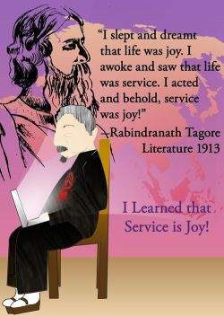
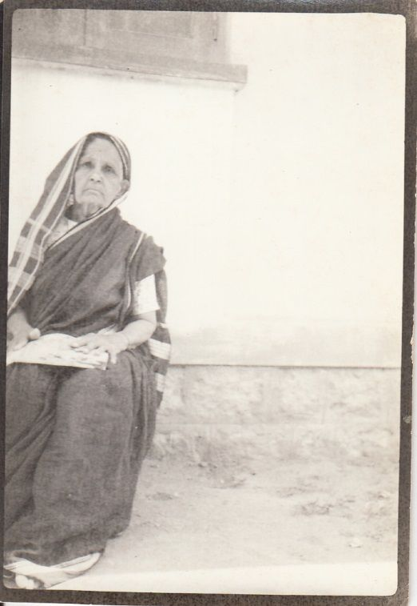
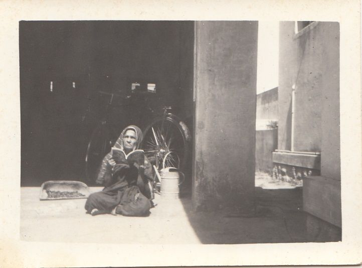

Ganga & Krishnamurthy Temple
Special Mobile Temple
Virtual & In Your Home Services

People, request God that you get your property! Our Naga idol is consecrated to enable people to request god that they get their property including family property.In the case of forebears’ property,that they be able to get the property, do charity and fulfill the wishes of the deceased.
People of ALL faiths are welcome. Special Mobile Temple expected to open in spring/summer 2022.

Illustrations:Sabrina Brook
PROCEDURE FOR BOOKING SERVICE:
1. We lend our idol to you with or without ‘tools’ [such as bell, oil lamps] required for the service.
2. Arrange, with fee, with a priest of your choice to perform the service either in your home or in his home or elsewhere. Arrange for
3. Email GKTempleGK@gmail.com of date, time, location and whether or not your priest wants us to provide the ‘tools’.
4. Temple Fee is $50 with or without the ‘tools’. Driver fee for transporting the idol is $X
FOUNDING GANGA & KRISHNAMURTHY TEMPLE
Ganga & Krishnamurthy Temple is being founded by me, R.V. Nagaveni M.D., M.S., to honor my charitable paternal Grandmother Gangamma and also my Great Grandfather who treated her well. I am commencing with one idol of Naga. The Naga idol will be consecrated to enable women to request God that they get their family property and do charity. In the case of forebears’ property, that they be able to get the property, do charity and fulfill the wishes of the deceased.
We shall bring the idol to places such as homes or other places where devotees request a service to be performed. The service will also be available virtually.
Ganga and Krishnamurthy Temple is named after my paternal Grandmother Gangamma and her Father Krishnamurthy. She was named after the Water Goddess Ganga. Grandmother Gangamma was a very intelligent, loving, non-discriminating and charitable woman.
Gangamma's father, Advocate Krishnamurthy, walking 2222 miles, made a pilgrimage from the village Kadaba, Karnataka state, Bharatha, to the city of Kaashi on the bank of the holy river Ganga at the confluence of three rivers. Upon his return, his second child was born. He named the baby 'Ganga'.

Grandmother Gangamma in 331, 15th Cross, 2nd Block, Jayanagara, Bengaluru 560011.

Grandmother Gangamma at home in the garage, reading Kannada Chandamama in the warm winter sunshine.
Influenza epidemics usually have a greater adverse effect on children and seniors than on others. The Influenza Pandemic of 1918 took the lives of healthy young adults. In that pandemic, Gangamma's husband, Venkanniah, a great Samskritha Scholar and her charitable father in law, Narayanappa, the head of a wealthy joint family, passed away fifteen days apart. Her unjust brothers-in-law, discriminating against her as a woman, greedily grabbed her rightful share of the property depriving her of a livelihood. They made a wealthy and charitable woman poverty stricken. Her two children were my father, three-year-old [Venkata] Ramiah, and his younger sister. By then, Gangamma's kindly father, Krishnamurthy, an advocate, had passed away.
More than a whole century later there has been no self-improvement in most Indian men regarding their attitude towards women. Most Indian men and women still believe in male superiority.
Emanuel Nobel, Alfred
Nobel's favorite nephew
Alfred Nobel
21 Oct 1833 - 10 Dec 1896
Ragnar Sohlman, Alfred
Nobel's 26 yr. old Assistant
and Executor of his Will.
The passage in Alfred Nobel's Will regarding the Nobel Prizes was legally defective. Hence, it was almost impossible to implement the will. Alfred Nobel's favorite nephew, Emanuel, who lived in Russia, wanted Nobel's wishes to be respected.Emanuel told Ragnar Sohlman, executor of Nobel's will, about the Russian concept that “The executor of the estate of the deceased is the spokesperson of the soul of the deceased”.
Literature reverse
Science and Literature obverse
Peace obverse and reverse
Nobel Medals
The saying helped Alfred Nobel’s 26-year-old testator Ragnar Sohlman to implement Nobel’s Will and establish the Nobel Prize!